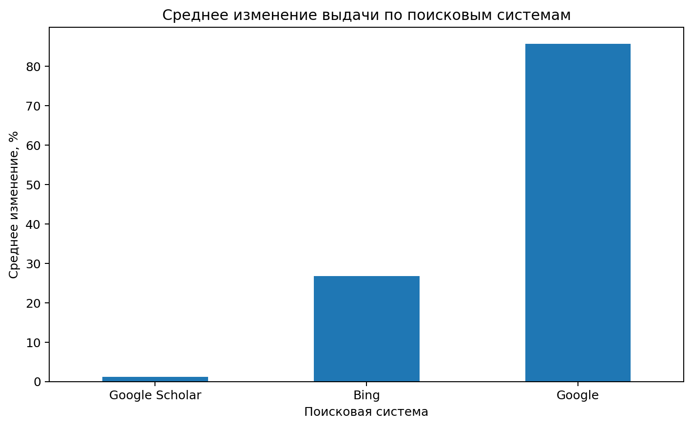
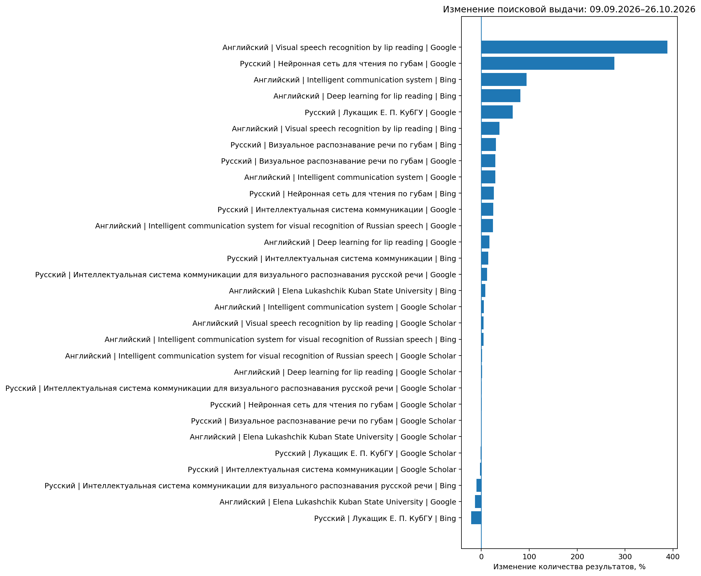

Отчет о результатах поиска
Для проведения поиска информации были сформированы поисковые запросы на русском и английском языках. В их состав были включены полная формулировка темы выпускной работы, сведения о научном руководителе, а также ключевые фразы, отражающие основные направления исследования. Для англоязычного поиска был выполнен адаптированный перевод с использованием специальной терминологии предметной области на английском языке.
При формулировании запросов учитывалось их различное назначение: от запроса по полной теме работы до более узких запросов, связанных непосредственно с визуальным распознаванием речи, чтением по губам и применением нейронных сетей в этой области. Это позволило оценить как общую информационную составляющую предметной области, так и наличие более специализированных материалов, отражающих направление магистерской диссертации.
В качестве поисковых систем использовались Google, Bing и Google Scholar. Первые две системы применялись для поиска информации в Интернете в целом. Google Scholar использовался преимущественно для поиска научных публикаций по рассматриваемой теме.
Поиск информации осуществлялся в два этапа: 9 сентября 2026 года и 26 октября 2026 года. Интервал между поисками составил 47 дней, что позволило сопоставить результаты, полученные на начальном и заключительном этапах работы над персональным сайтом.
Отчет о поисках от 09.09.2026 г.
Первичный поиск был проведён 9 сентября 2026 года. Его результаты представлены в таблице ниже. Результаты первичного поиска показали, что объём выдачи существенно зависит от формулировки запроса, используемой поисковой системы и языка поиска. Общие запросы, например «Интеллектуальная система коммуникации» и Intelligent communication system, обеспечивали значительно более широкую выдачу, чем запросы, непосредственно связанные с визуальным распознаванием речи.
Уже на первом этапе наблюдались значительные расхождения между поисковыми системами. Например, для запроса «Визуальное распознавание речи по губам» Google показал 342 тыс. результатов, Bing — 491, а Google Scholar — 87. Для данного запроса на английском языке количество результатов составило 11 400 000, 87 600 и 184 тыс. соответственно. Аналогичные различия наблюдаются и для других запросов. При этом необходимо учитывать, что большое количество найденных документов не гарантирует их тематической релевантности.
| Поисковый запрос |  |
||
На русском языке |
|||
| Интеллектуальная система коммуникации для визуального распознавания русской речи | 213 000 | 56 900 | 106 |
| Лукащик Е. П. КубГУ | 130 | 572 | 66 |
| Визуальное распознавание речи по губам | 342 000 | 491 | 87 |
| Интеллектуальная система коммуникации | 38 600 000 | 16 400 | 34 900 |
| Нейронная сеть для чтения по губам | 376 000 | 2 110 | 115 |
На английском языке |
|||
| Intelligent communication system for visual recognition of Russian speech | 33 600 000 | 148 000 | 88 300 |
| Elena Lukashchik Kuban State University | 124 | 666 | 11 |
| Visual speech recognition by lip reading | 11 400 000 | 87 600 | 184 000 |
| Intelligent communication system | 596 000 000 | 6 430 | 6 210 000 |
| Deep learning for lip reading | 27 700 000 | 22 100 | 378 000 |
Отчет о поисках от 26.10.2026 г.
Повторный поиск был проведён 26 октября 2026 года по тем же запросам и с использованием тех же поисковых систем. Результаты представлены в таблице ниже. Сопоставление результатов позволяет оценить изменение количества результатов за период работы над сайтом. Для этого для каждой комбинации запроса и поисковой системы рассчитывались абсолютное изменение количества результатов и относительное изменение в процентах.
| Поисковый запрос | |
||
На русском языке |
|||
| Интеллектуальная система коммуникации для визуального распознавания русской речи | 239 000 | 51 300 | 107 |
| Лукащик Е. П. КубГУ | 215 | 453 | 65 |
| Визуальное распознавание речи по губам | 443 000 | 641 | 87 |
| Интеллектуальная система коммуникации | 48 400 000 | 18 800 | 34 100 |
| Нейронная сеть для чтения по губам | 1 420 000 | 2 660 | 116 |
На английском языке |
|||
| Intelligent communication system for visual recognition of Russian speech | 41 900 000 | 155 000 | 89 800 |
| Elena Lukashchik Kuban State University | 108 | 723 | 11 |
| Visual speech recognition by lip reading | 55 700 000 | 121 000 | 193 000 |
| Intelligent communication system | 770 000 000 | 12 500 | 6 550 000 |
| Deep learning for lip reading | 32 500 000 | 40 100 | 384 000 |
Анализ результатов
Сравнение поисковых систем
По результатам повторного поиска Google демонстрирует наиболее высокие значения количества результатов по большинству тематических запросов. Особенно заметна разница для широких формулировок, связанных с интеллектуальными коммуникационными системами, а также для англоязычного запроса Visual speech recognition by lip reading.
В Bing количество результатов по ряду запросов значительно ниже, чем в Google, однако по некоторым формулировкам в период между двумя поисками наблюдался заметный рост. Например, количество результатов по запросу Deep learning for lip reading увеличилось с 22 100 до 40 100, а по запросу Intelligent communication system — с 6 430 до 12 500.
Google Scholar показывает более стабильные значения. По специализированным запросам на русском языке изменения были небольшими: для запроса «Визуальное распознавание речи по губам» количество результатов осталось равным 87, а для запроса «Нейронная сеть для чтения по губам» увеличилось со 115 до 116. По англоязычным запросам также наблюдались относительно небольшие изменения по сравнению с общими поисковыми системами.
Для количественного сравнения были рассчитаны средние, минимальные и максимальные относительные изменения по всем пяти запросам каждого языка и по каждой поисковой системе. Среднее изменение за рассматриваемый период составило приблизительно 85,71% для Google, 26,79% для Bing и 1,17% для Google Scholar.

Рисунок 1 — Среднее изменение количества результатов по поисковым системам
Сравнение русскоязычного и англоязычного информационного пространства
Сопоставление запросов на двух языках показывает, что информационная ситуация зависит как от языка, так и от степени специализации формулировки. Для общих англоязычных запросов Google отображает очень большие значения: например, для Intelligent communication system количество результатов увеличилось с 596 млн до 770 млн. Однако данный запрос охватывает широкую область интеллектуальных коммуникационных систем и не ограничивается визуальным распознаванием речи.
По запросу Visual speech recognition by lip reading в Google количество результатов увеличилось с 11,4 млн до 55,7 млн. В Bing значение выросло с 87,6 тыс. до 121 тыс., а в Google Scholar — со 184 тыс. до 193 тыс. Это свидетельствует о том, что специализированная англоязычная формулировка обеспечивает доступ к значительному массиву материалов по визуальному распознаванию речи.
Для русскоязычного запроса «Визуальное распознавание речи по губам» Google показал увеличение с 342 тыс. до 443 тыс. результатов, Bing — с 491 до 641, а Google Scholar сохранил значение 87.
Полученные данные обосновывают целесообразность мультиязычного поиска. Англоязычные запросы полезны для выявления современных методов глубокого обучения, архитектур нейронных сетей и международных наборов данных. Русскоязычные запросы необходимы для поиска исследований, связанных с фонетическими особенностями русского языка, существующими русскоязычными корпусами и возможностями применения визуального распознавания речи в отечественных системах.
Динамика информационной ситуации
Интервал между первичным и повторным поиском составил 47 дней. Из 30 сопоставлений количества результатов в 23 случаях наблюдалось увеличение, в 5 — уменьшение, в 2 — отсутствие изменений.
Наиболее значительные относительные изменения были выявлены в Google. Для запроса Visual speech recognition by lip reading количество результатов увеличилось с 11,4 млн до 55,7 млн, то есть приблизительно на 388,60%. Для запроса «Нейронная сеть для чтения по губам» значение выросло с 376 тыс. до 1,42 млн, или приблизительно на 277,66%.
В Bing максимальный рост среди рассмотренных запросов наблюдался для Intelligent communication system: количество результатов увеличилось с 6 430 до 12 500, что соответствует приблизительно 94,40%. В Google Scholar максимальное относительное увеличение среди выбранных запросов составило около 5,48% для того же англоязычного запроса.

Рисунок 2 — Относительное изменение количества результатов поиска за период наблюдения
При расчёте среднего, минимального и максимального темпов изменения за 30 дней были получены следующие ориентировочные значения:
- Google: средний темп — 42,30%, минимальный — −8,44%, максимальный — 175,27%;
- Bing: средний темп — 15,38%, минимальный — −13,83%, максимальный — 52,85%;
- Google Scholar: средний темп — 0,74%, минимальный — −1,47%, максимальный — 3,46%.
Данные показатели рассчитаны по всем пяти запросам на каждом языке и отражают условное изменение количества отображаемых результатов, приведённое к 30-дневному интервалу. Они не являются оценкой темпа публикации новых научных работ.
В целом наиболее выраженная динамика наблюдалась в общих поисковых системах, тогда как количество результатов Google Scholar изменялось относительно незначительно. Это может быть связано с различиями в составе индексируемых ресурсов и способах оценки количества результатов, а также с особенностями конкретных запросов.
Аномалии и особенности поисковой выдачи
В ходе анализа выявлено несколько заметных отклонений:
- Наблюдается значительное расхождение между Google и Bing по одному и тому же запросу. Например, по запросу «Визуальное распознавание речи по губам» 26 октября Google показал 443 тыс. результатов, а Bing — 641. Подобная разница наблюдалась и при первичном поиске. Возможными объяснениями являются различия поисковых индексов, алгоритмов обработки запросов и способов оценки числа найденных документов.
- В Google обнаружен резкий рост количества результатов по отдельным специализированным запросам. В частности, выдача по запросу Visual speech recognition by lip reading увеличилась почти в 4,9 раза, а по запросу «Нейронная сеть для чтения по губам» — почти в 3,8 раза. При этом по другим запросам рост был значительно меньше.
- По запросам, содержащим имя автора, результаты различаются в зависимости от поисковой системы. Например, по запросу «Лукащик Е. П. КубГУ» в Google количество результатов увеличилось со 130 до 215, а в Bing уменьшилось с 572 до 453. В Google Scholar значение изменилось с 66 до 65. Это демонстрирует, что поисковая выдача по персональным запросам также зависит от алгоритмов индексирования и не является постоянной величиной.
- Широкий запрос Intelligent communication system показывает очень большое количество результатов, однако не обеспечивает высокой тематической точности. Для формирования научной библиотеки по теме диссертации необходимо дополнять общие формулировки специализированными запросами, связанными с visual speech recognition, lip reading, deep learning и архитектурами нейронных сетей.